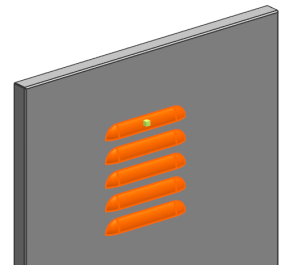
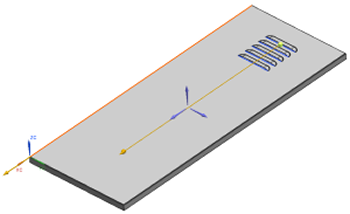
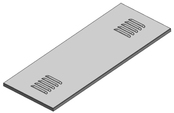

Create a second array with the same pattern
You will use the Pattern Feature command again to create another array of five louvers 575 mm below the first pattern.
-
On the Standard toolbar, from the Repeat Command Drop-down list, select Pattern Feature
 .
.
-
Select the louver feature and the linear pattern, as shown.

You can ignore any alerts that come up.
-
In the Pattern Definition group, make sure the Layout list is set to Linear, and press the middle mouse button to advance to the Vector step.
-
Select the same edge you selected before and double-click the direction arrow so that it points down.

-
In the Pattern Definition group, set the following parameters for Direction 1:
-
Spacing = Count and Pitch
-
Count = 2
-
Pitch Distance = 575
-
-
Click OK.

-
Close the part now, or close all parts when you exit the session.